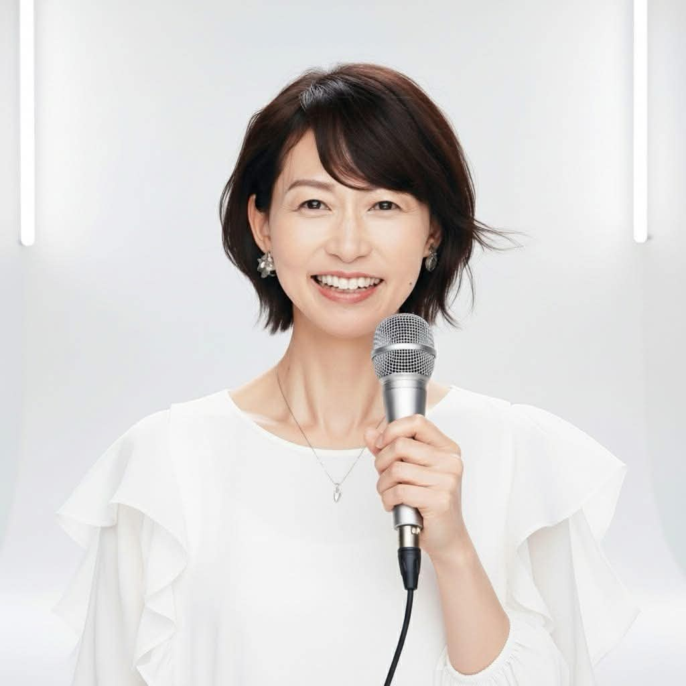
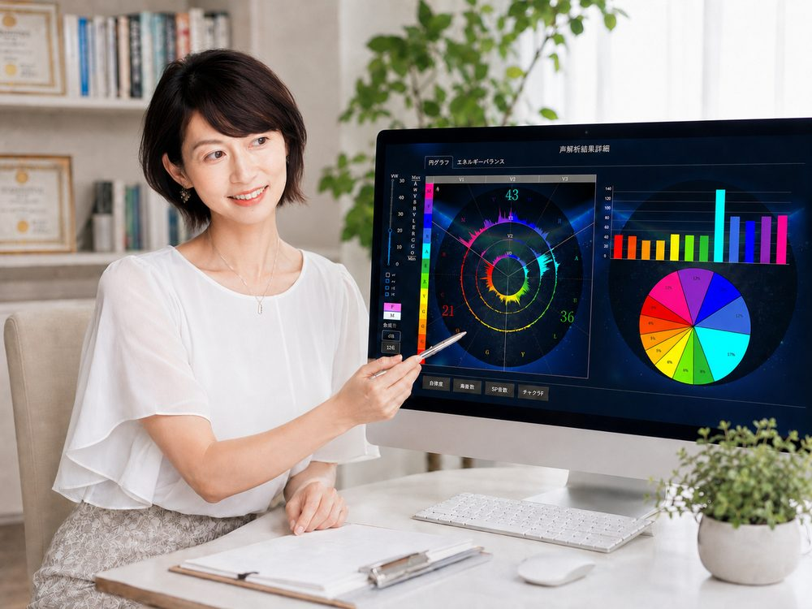

Voice Branding Specialist
中 川 真 樹 子
声解析士マスターインストラクターとして、声の周波数に映る"心の声"を読み解き、
あなたらしい魅力とブランディングを引き出すお手伝いをしています。

Profile
実は私自身、繊細な気質（HSP）ゆえに、人からの評価や期待に振り回されてきた過去があります。 子育てへの不安や自信のなさに悩んだ時期を経て気づいたのは、"自分の声"にこそ本当の答えがあるということ。 だからこそ、同じように悩む方の"心の声"に寄り添い、その人らしい輝きを引き出すお手伝いをしたいと思っています。
2000
求人広告会社にてキャッチコピー・ライティング・営業スキルを磨く。九州支社売上1位、Web媒体九州エリア連続1位、本社表彰を受賞。
2004
物流コンサルティング会社にて営業課長を務め、人事・営業・新規事業に携わる。
2009
結婚を機に退社。子ども劇場の運営・事務局、保護者会会長を務める。
2019
EQ絵本講師®となり、講座をスタート。
2021
マヤ暦アドバイザーとして活動を開始。
現在
心理学・コーチングを学び資格取得講座を開催するかたわら、モデレーターやボイストレーニングにも携わる中で 「声解析」に出会う。現在は声の周波数からわかる"心の声"を読み解き、カウンセリング・コーチング・各種講座を展開。 AIスクールのエージェンシー活動やイベント企画にも力を注いでいる。
Qualification
About Voice Analysis
声の周波数には、言葉以上に多くの"その人らしさ"が現れます。
声解析は、その周波数から強み・課題・魅力を可視化する手法です。

01
声の周波数から、言葉にできていない本音や本来の魅力、強み・弱みを客観的に読み解きます。
02
話し方・言葉の選び方を整えることで、ビジネスでも人間関係でも「この人にお願いしたい」と自然に選ばれる伝わり方に変えていきます。
03
EQ絵本、マヤ暦、心理学の知見を組み合わせ、あなたらしく輝くための土台となる自己肯定感を育みます。
Self Check
当てはまるものに、気軽にチェックしてみてください。
あなたの"声"のクセや、心の状態が見えてくるかもしれません。
※ 医学的な診断ではありません。ご自身の傾向を知るための簡易チェックです。
CHECKED 0 / 12
LINE公式で無料相談を予約するWho It's For
声解析は、年代や立場を問わず"自分の声"に悩むすべての方へ。
実際の声を通じて変化していった3つのケースをご紹介します。
仕事も子育ても頑張っているのに、
自分に自信が持てない
"
★★★★★
緊張すると声が震えてしまい、二次面接が本当に不安でした。でも自分の"声"に自信が持てるようになってから、自己紹介もプレゼンも堂々と話せるように。結果、無事に採用が決まり、収入も1.5倍になったんです。声を変えただけで、こんなに人生が変わるなんて思っていませんでした。
30代女性・会社員／ 1か月ご利用
これからは、
自分の人生を歩みたい
"
★★★★★
子育てが少し落ち着いた頃、"この先の私はどうしたいんだろう"とずっとモヤモヤしていました。声解析を受けて驚いたのは、自分でも気づいていなかった"本当の気持ち"がちゃんと声に表れていたこと。今は我慢せず自分の言葉で話せるようになり、新しいことに挑戦する勇気が持てるようになりました。
40代女性・パート勤務／ 継続3か月ご利用
人間関係にストレスがあり、
話し方、声に自信をつけたい
"
★★★★★
病気をしてから、自分の声に自信がなくなってしまいました。8回のサポートを重ねる中で、少しずつ声の波形が変化し、以前より自然に声が出るようになったんです。完璧主義でストレスを抱えやすかった私ですが、前向きに考えられるようになりました。声だけでなく、心まで変わったと感じています。
50代男性・経営者／ 継続6か月ご利用
Flow
お申し込みからセッションまで、迷わず進めるようにご案内します。
下記ボタンからLINE公式アカウントを友だち登録してください。
LINE上で、ご希望の日時をご相談いただきます。
オンラインで、あなたの声を解析しながらお話しします。
結果をもとに、これからの一歩をご提案します。
Service
～ 人生に変化を起こす鍵は、あなた自身の声にある ～
LINE公式アカウントにご登録の方限定のご案内です
もっとじっくり声と向き合いたい方向けのセッションです。
声解析を通じて、今の課題やお悩みを一緒に整理していきます。
FAQ
はい。Zoomなどを使用したオンラインセッションに対応しております。全国どちらからでもご参加いただけます。
もちろんです。ほとんどの方が初めてのご利用です。丁寧にご説明しながら進めますので、安心してご参加ください。
個人差はありますが、多くの方が数回のセッションからご自身の声や心の変化を実感されています。まずは初回の特別個別セッションでお試しください。
はい。セッションで伺った内容は守秘義務のもと厳重に管理し、第三者に開示することはございません。安心してご相談ください。
可能です。LINE公式アカウントより、お気軽にご相談ください。
Achievement
For Media
講演会・ラジオ・イベントなど、声と表現力を活かした活動を行っています。
取材・記事掲載・出演のご相談は、お気軽にお問い合わせください。
中川真樹子（なかがわ・まきこ）｜声解析士マスターインストラクター・声ブランディング専門家
声の周波数から"心の声"を可視化する声解析を軸に、カウンセリング・コーチング・各種講座を展開。EQ絵本講師®、心理カウンセラー、NLP、HSPカウンセラーなどの知見を活かし、"言葉と声で自然に選ばれる人"を育てるお手伝いをしている。講演会・コンベンション司会・ラジオ出演・イベント企画など、声と表現力を活かした活動多数。
プロフィール写真・経歴資料もご用意しております。取材・メディア掲載のご相談は、下記よりお気軽にご連絡ください。
Connect
LINE公式アカウントにご登録いただくと、初回限定で特別個別セッション（通常20,000円）を無料でご案内しています。
LINE公式で無料相談を予約する